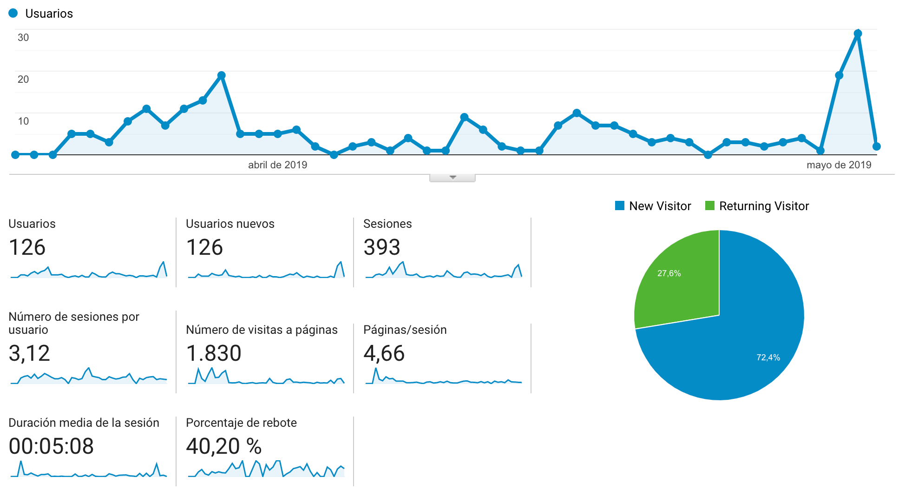

At first almost none of the users had so much difficulty entering the application. Most users understood how the buttons worked, but as it filled all the information, automatically that confused some of them. We had users who had trouble advancing the application because of lack of instructions or because the design is unintuitive.
- Focused interface
- Non complicated features
- Visual images
- Position of elements
- Attractive design
- Too many options
- Small buttons
- Space between objects
- Tryout figures
- Unintuitive
- Visibility of system status: We believe that it succeeds in this. The user always knows in what tab he is. Visual cues are very clear. In every tab, we can see that the options are few, clear and always tell the user where to look.
- Match between system and the real world: In the app is only used simple languaje, but in this case, we can see that the configuration menu is rather clear. There are no technical terms used in the site.
- User control and freedom: The user is able to cotrol all his info and data and the app allows an easy way out of the places that you can go to. It’s an arrow on the top right side of the screen. As seen on the picture below.
- Consistency and standards: The screen where you type in your password, is a little confusing to some of the users. The registration button is not very clear apparently. It took one user a minute and a half to register in, some find it easier, however this seemed to be a slight problem. They are able to see later on what they didn’t do right, but it should be easier for them.
- Error prevention: As stated before, we did find one slight error. Though there are people who can find the way into our app much quicker. Some find it more difficult to create an account and access the app.
- Recognition rather than recall: There is no need for recall with the app. Once they are in, the app becomes more intuitive. As said before, the phrases or words used are rather clear in the way they convey messages. It’s easy to add knockis, go back and so on.
- Flexibility and efficency of use: It was good it seemed intuitive enough.
- Aesthetic and minimalist design: The app interface maintain a minimalist desing through all the app.
- Help and documentation: There is no help or documentation.
After all the tests and feedback that the Infinity team received from our users, we can conclude that the Infinity app is very easy and a user-friendly app. The elegant design is really attractive and tells the users all they need to know about the Knocki device. The functionality of the app allows to navigate and use the app without any problem. Its simple layout and menus are very intuitive, so users can interact with the devices with just a few taps in our app.
We asked three people about the web page. Two of them are 30 years of age and one of 50. Monica wasn’t able to distinguish what the page was about, while Nahum and Sam were able to find out rather quickly what the page was about. Sam told us a lot of valuable information. Specifically, some of the information found in persona wasn’t very clear. The profile image in the youtube video didn’t seem to go according to our page. Besides that there a few grammar mistakes. Nahum saw the page on both his phone and laptop. He likes that it’s visible in both platforms. He didn’t understand very well, why we had a personas section. Finally Monica said that the page look fine.
Almost all users did not scroll to far away from the start point, most of them just watched the first content shown.
In the aspect of the click points, some users got confused with the images and clicked in wrong places, but the buttons and other similar elements were correctly identified.
We managed to keep our users on the page in an average of 5 minutes.
